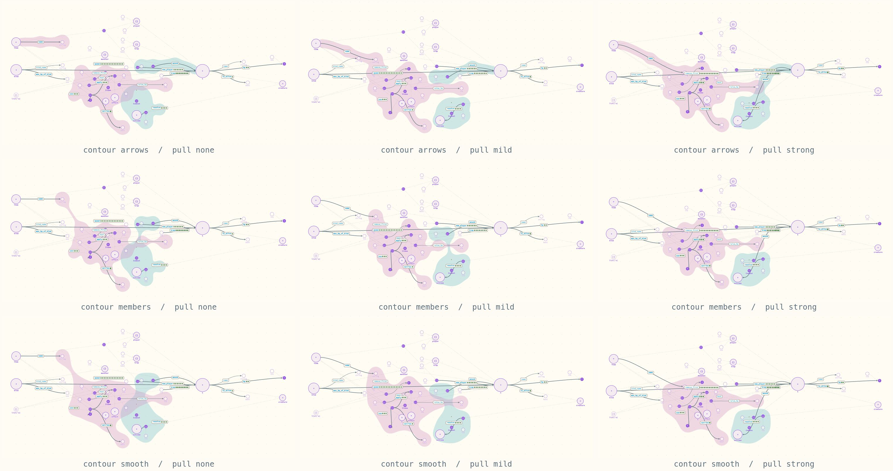
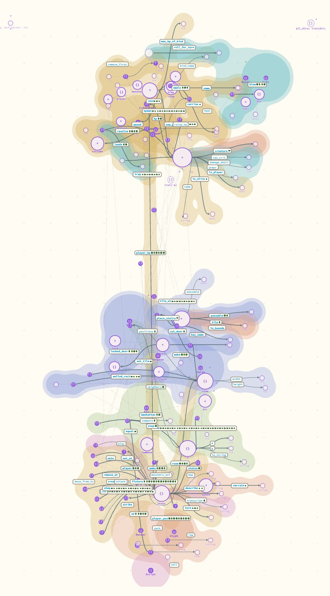
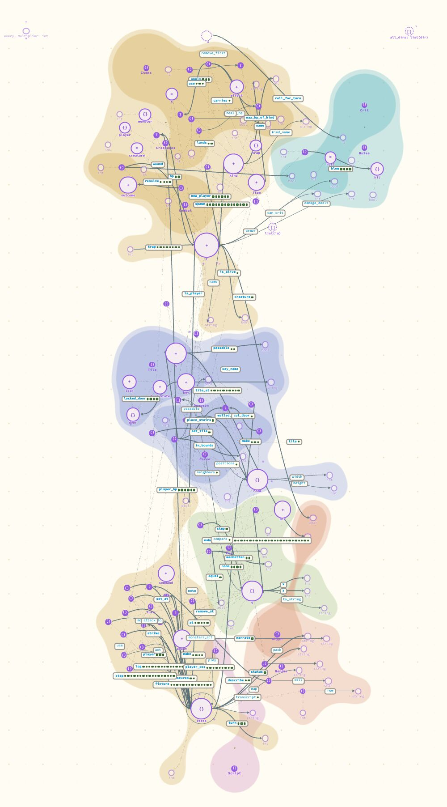
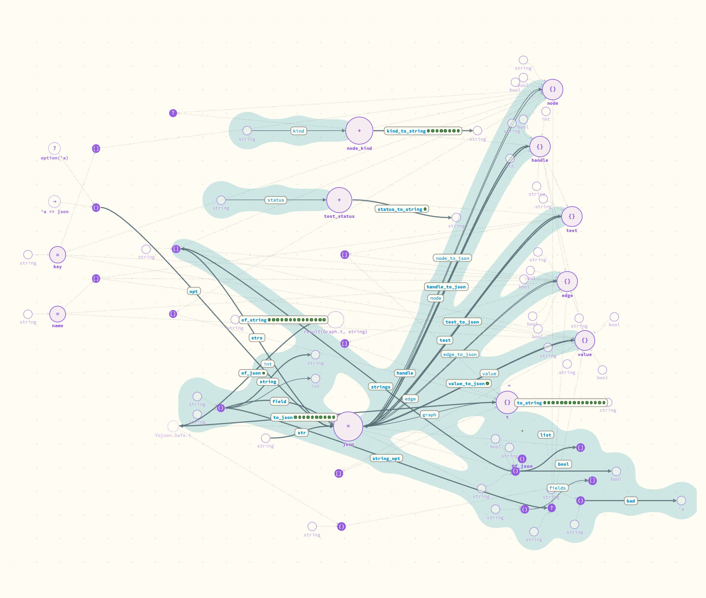
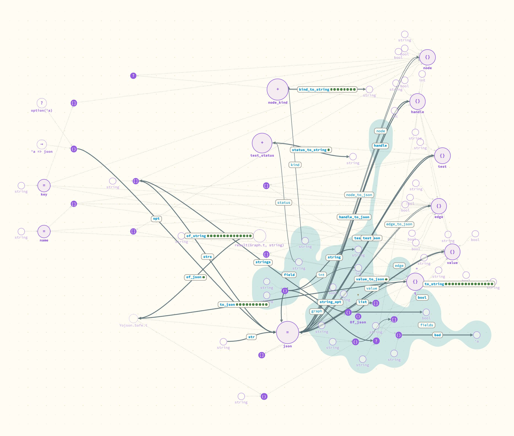
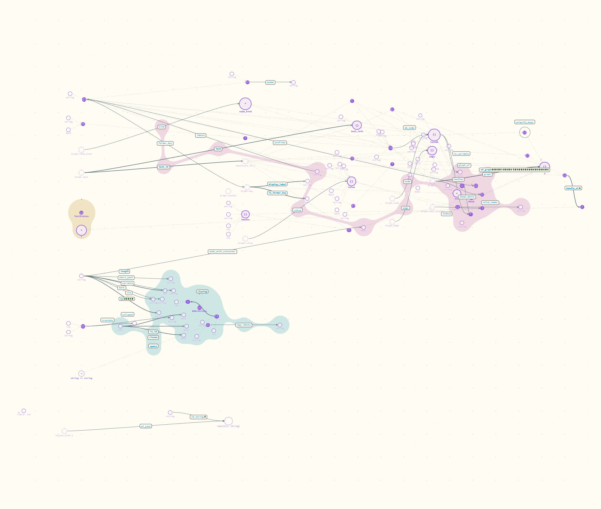
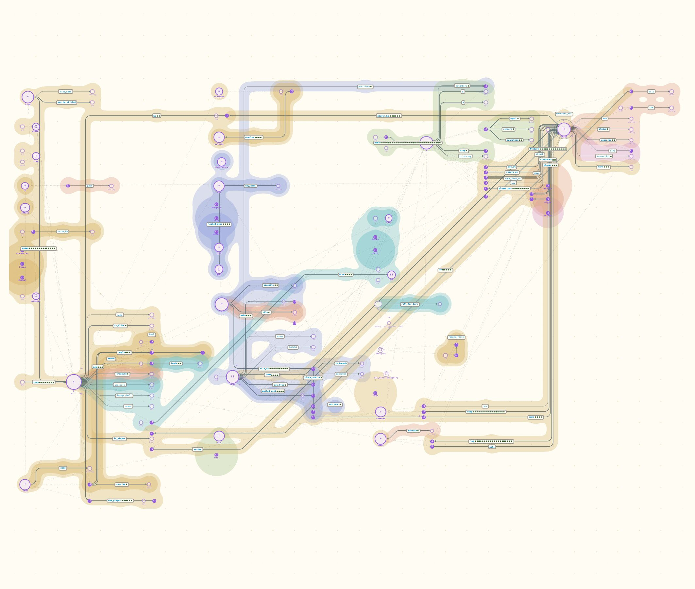
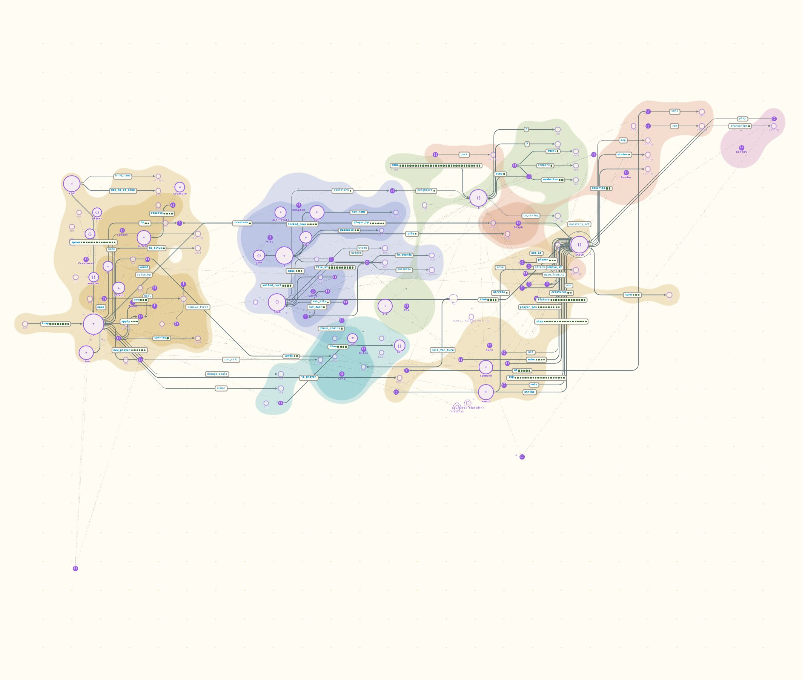

Is a tendrilly region a matter of its outline, or of where its members sit?
Both, and they are separate. Drawing the outline around a module's members instead of along its arrows removes the arms, but leaves the module in pieces joined by threads. Pulling the members together is what makes it one mass. With both, the dungeon example's seven modules read as seven regions, and a module that is mostly functions between other modules' types still comes out stretched. The price is longer arrows between modules and some of the layout's own order.
- Why
-
A module's region is a circle around each member plus a band along each of the module's arrows, merged into one blob. So its shape is whatever the arrows do. The layout does not try to keep a module's members near each other, so the blob grows arms across the board, and other modules' nodes end up between the arms where inside cannot be told from outside (the last picture of entry 3).
Andrew wants regions "more consolidated" and not "as tendrilly as it is now", but is not sure he wants "to turn everything into kind of oblate spheroids": "I could see the truth as being somewhere between the two." One way he thinks about it is what closing a module to a single disc would look like. He wanted to see it on real code before deciding.
The reading this entry tests: there are two things. The contour, which could go around members only and so be as irregular as the membership is. And a pull, a tendency of a module's members toward each other, so that a module that owns its types comes out compact, one that does not stays stretched, and being stretched then says something.
- What I did
-
Two settings in the canvas header, beside layout and edges, each also an API call and
?contour=/?pull=in the address. The defaults are today's behaviour.Contour.
arrowsis today's.membersdraws the circles and no bands; a module in several pieces is joined by the shortest tree of thin links between them. A function with one end inside the module and one outside keeps its label out of the region: it is an arrow leaving.smoothis the same shapes drawn larger, through a filter that takes the extra back off the outside, so the hollows between near members fill in and nothing else grows.Pull.
none,mild,strong. A pass after whichever layout placed the nodes and before any arrow is routed. In rounds, each member moves 3% of the way to its module's centre (14 rounds or 40), and modules that sit on top of each other move apart, each as one piece. Then nodes are moved clear of each other, each arrow is given room for its label, and a node that a module has closed around is moved out through the widest gap. A built-in terminal docked to another module's type is let go and travels with its own module. Nested modules are pulled toward their own centre and their parent's.Shot on four scenes, all nine combinations each, in the layered layout with curved edges: the dungeon example whole with its seven modules open, its
Creaturesmodule (nestedItemsandCombat), Portolan'sGraph(nestedOf_json) and Portolan'sCanvasGraph(three nested modules).CanvasGraphstands in forTurn, which has no nested module and so no region: it draws the same under every combination. Three combinations were shot again in the ledger layout with metro edges. Every picture is a headless Chrome screenshot at double density, 50 in all with the two ofTurn. I looked at each of them; Andrew has seen none.
What happened

Creatures module, all nine. Rows: contour arrows, members, smooth. Columns: pull none, mild, strong. Pink is the nested module Items, teal is Combat. Top left is today's.Down the first column, with nothing moved: the bands go and Items keeps its shape, but its far member (the result of name, top left) is now a lump on a thread, and smooth fills between the pieces and so covers nodes that are not the module's.
Along the first row, with today's contour: the pull makes it worse. A terminal that has gone home leaves a longer arrow behind, and the band follows the arrow.
Bottom right: two masses side by side, with the arrows of Combat's functions leaving its region for the parent's type t.


arrows, none). Seven modules. Which nodes are in Rules (teal, top) cannot be read.

smooth, strong. From the top: Creatures with Items and Combat darker inside it, Rules beside it, Dungeon, Pos, then Turn, Render and Script. A few arms remain: results that Creatures' and Turn's own functions keep docked at a type on the module's edge.

Graph today. Of_json is functions from json to the parent's record types, so its region is the bundle of arrows.

members, strong. Of_json is what it owns: argument tuples and terminals, gathered beside json. Most of the same arrows now leave the region. Two functions that run wholly between the parent's types (node, handle) still hold an arm up the bundle by their labels.
CanvasGraph, members, strong. Abbreviate (teal) works on strings of its own and closes to one mass. Read (pink) is functions between the parent's types: the pull has nothing of its own to gather, and it stays a thread through them.



smooth, strong. The modules come apart into a row. Inside a module the ledger's rows no longer line up.| Contour | Pull none | Pull mild | Pull strong |
|---|---|---|---|
| arrows | Today's: arms, and no inside or outside between them. | Worse than none. | Worst: the longest arrows, each with a band. |
| members | No arms. A spread-out module is lumps on threads, and the threads cross other regions. | Neither: things have moved, and modules that lay over each other still do. | Best for one module's view. Each region is the nodes in it and nothing else. |
| smooth | Fills between the pieces, so it covers what is not the module's. Worse than members. | As above, rounder. | Best for the whole project: reads as a map. Hides which nodes of a region are members. |
- What it means
-
The two things are separate, and neither does the job alone. The contour decides whether a region has arms. The pull decides whether it is one piece. Today's contour cannot be kept with a pull at all.
Which is best.
strongwithmembersorsmooth. Between those two it is a matter of taste and of scale:smoothfor the whole project, where a region is read as a territory, andmembersinside one module, where it matters which nodes are in. Neither is an oblate spheroid: the shape is still the membership, andReadshows that a module with nothing of its own does not get rounded off.mildis not a useful middle. It disturbs the layout without separating anything.What consolidation costs. Arrows. A function of one module that takes another module's type used to keep its result docked at that type; now the result is at home and the arrow runs between the two regions. On the whole dungeon project the total length of arrows went from 18,900 to 26,200 board units, 39% more; on
Creatures12% more, onCanvasGraph9%, onGraph2% less. The long arrows cross regions they have nothing to do with. Inside a pulled module the layered layout's left-to-right order is weaker, a hub with many functions is as crowded as it was (Turn'sstate, bottom left of the dungeon pictures), and in the ledger the rows of a pulled module stop lining up, which was the ledger's point.Collapse. Under a strong pull every module that owns something is one connected shape with a centre, so closing it to a disc where it stands is a short move for every member. That was not built.
- Rough
-
The pull's numbers (3% a round, 14 and 40 rounds, the spacings) are first guesses. It solves everything again on every change, so one new function can move a whole module: it breaks the canvas's rule of stability of place, and it has not been watched through an agent's run or with nodes dragged by hand. Threads go straight and cross other regions. The modules shrink where they stand, so the board keeps the gaps between them. On the dungeon's 143 nodes the pass takes about as long as the layout it follows (some 60 ms against 50, on a busy machine), and the canvas lays a project out a dozen times when it is picked; a large project has not been timed. A change of pull leaves the same complaints in the canvas journal as a change of layout does (label leaders that appear with no act to bring them on).
- Andrew's to decide
-
Whether regions that read as regions are worth arrows a third longer in the whole-project view. Whether the look wanted is
membersorsmooth. And, if the pull is wanted, whether it should stay a pass after the layout or become part of the layouts: a ledger that gave each module its own block of lanes would keep its rows.